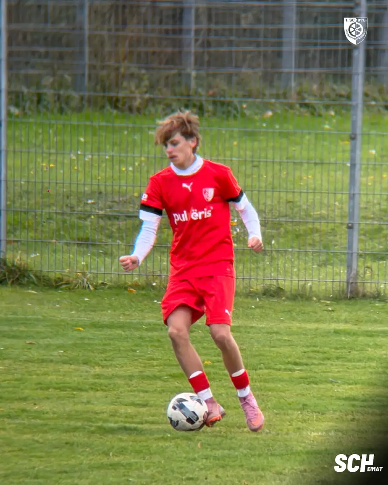
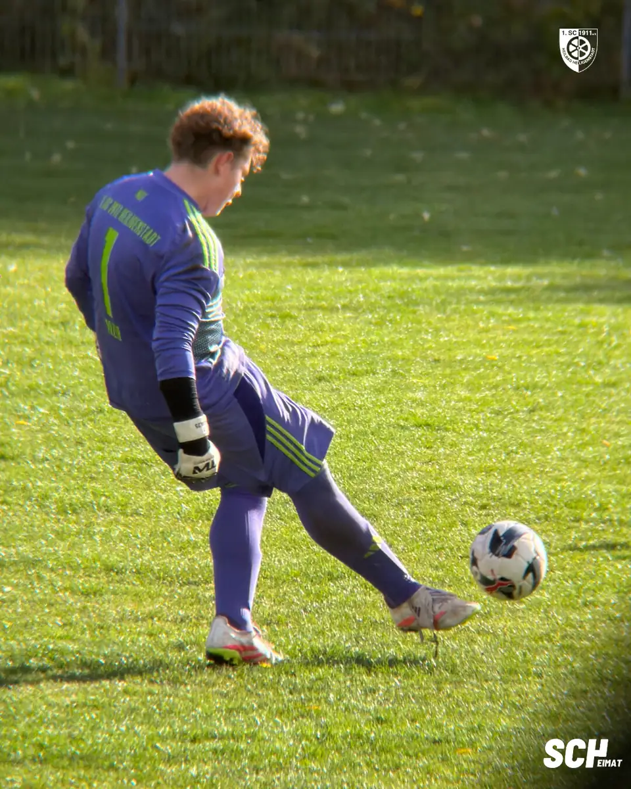
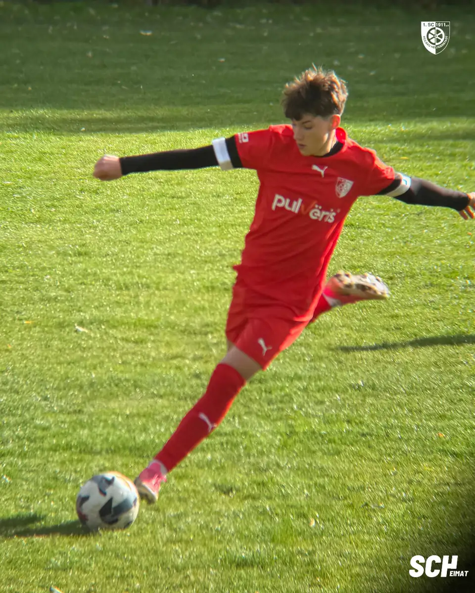
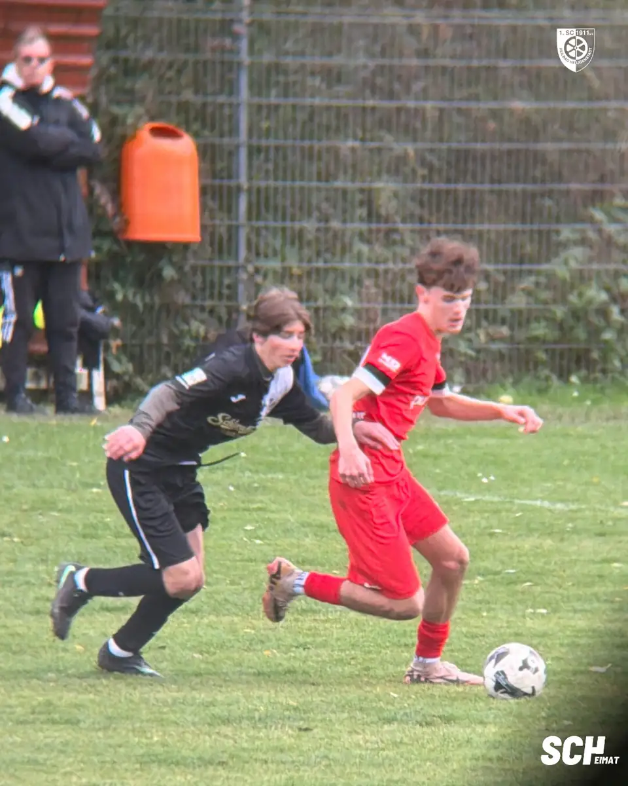
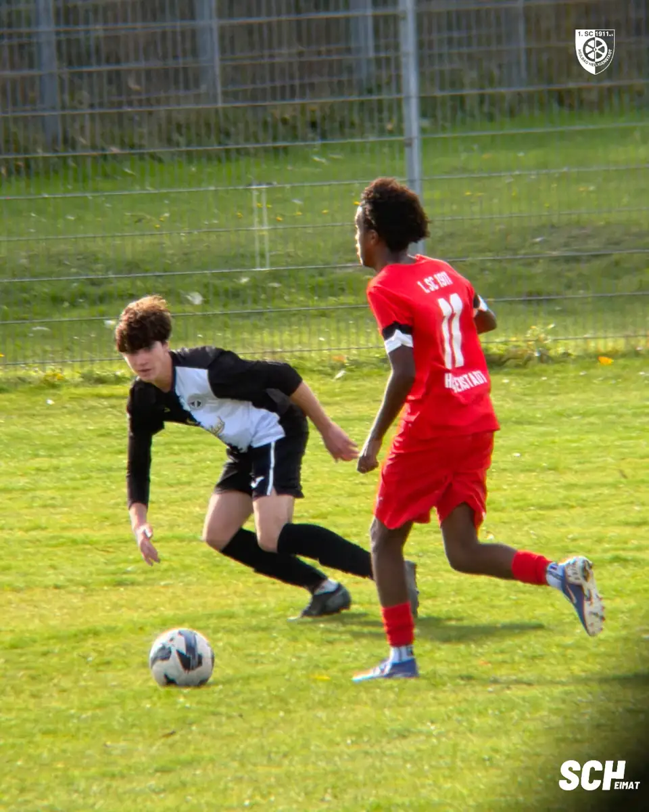
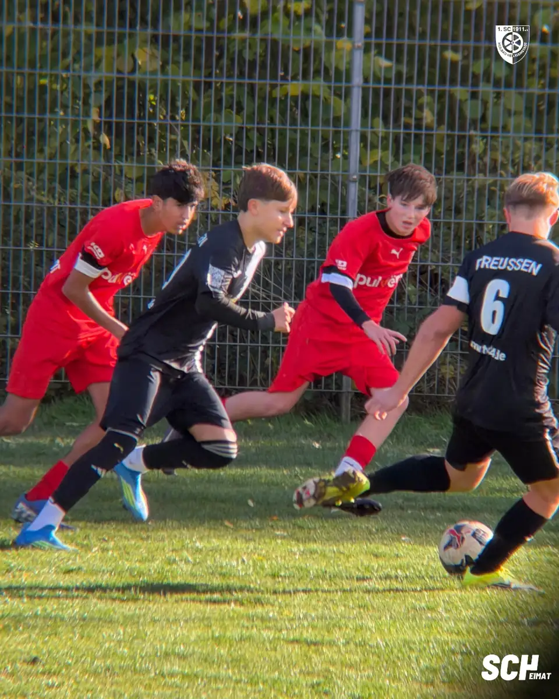
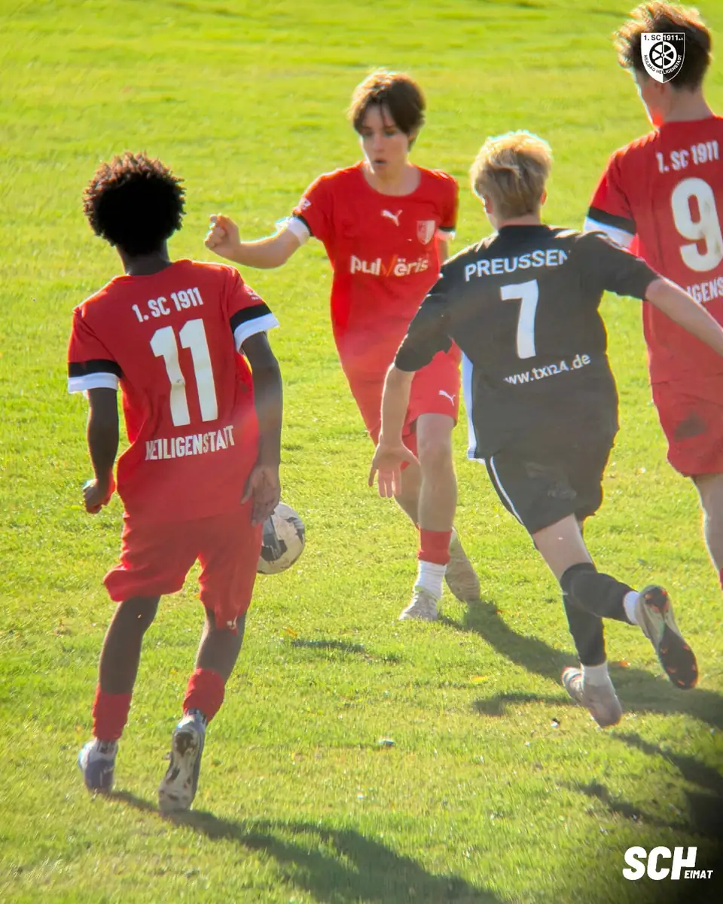
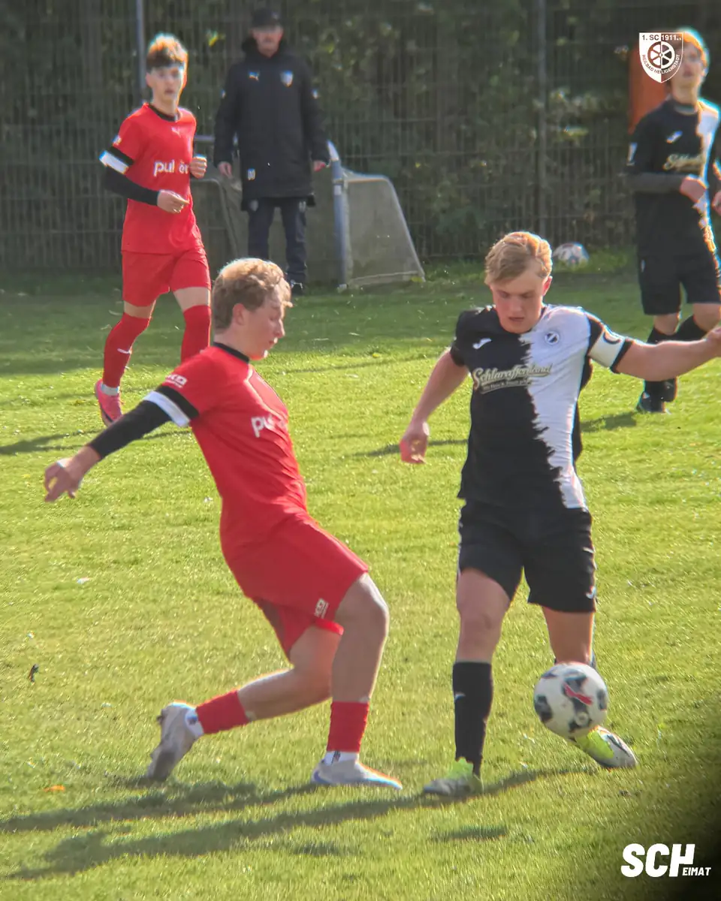

Raphael Preiß hält und trifft: B2 zieht nach Pokalkrimi in die nächste Runde ein
Schön war es nicht immer, aber am Ende zählt nur das Weiterkommen. Unsere B2 hat im Kreispokal die B1 des FSV Preußen Bad Langensalza mit 6:5 nach Elfmeterschießen bezwungen. Nach 80 Minuten und einer torlosen Verlängerung stand es 2:2, zweimal hatte Simon Weise einen Rückstand egalisiert. Im Shootout avancierte dann Torhüter Raphael Preiß zum Matchwinner: Erst parierte er, dann verwandelte er selbst den entscheidenden Elfmeter.
Schwerer Boden, schwerer Start
Der Platz auf dem Stelzenberg war tief und rutschig, an feines Kombinationsspiel war kaum zu denken. Gefragt waren Zweikampfstärke und Laufbereitschaft. In der ersten Halbzeit fand die Mannschaft von Trainer Carmine Perriello nur schwer in die Partie. Die Gäste aus der höheren Altersklasse hatten die klareren Möglichkeiten und gingen nach einer halben Stunde mit 1:0 in Führung. Dazu kam ein früher Wechsel: Bereits in der 22. Minute ging unser Kapitän Oleksander Kopach vom Feld, Robert Eckart kam für ihn.
Nach der Pause ein anderes Gesicht
Was die Jungs in der Kabine besprochen haben, war danach deutlich zu sehen sie kam viel präsenter aus der Pause, gewann mehr Zweikämpfe und zog das Spiel Stück für Stück an sich. Der Coach brachte mit Yussof Silfani und Lukas Drößler zusätzliche Energie. In der 61. Minute stand es verdient 1:1, Simon Weise hatte getroffen. Kurz danach sah ein Gästespieler Gelb-Rot.
Konter mitten in die Drangphase
Mit einem Mann mehr drückte die Perriello-Elf auf die Führung. Doch ausgerechnet in dieser Phase erwischte uns Bad Langensalza eiskalt. Nach einem schnellen Konter traf Lennart Laufer in der 71. Minute zum 1:2. Ein Moment, nach dem viele Teams auseinanderfallen. Unsere Jungs taten das Gegenteil. Sie rannten weiter an, warfen sich in jeden Ball und gaben sich nicht geschlagen.
Der Freistoß in letzter Sekunde
Belohnt wurde das mit der allerletzten Aktion der regulären Spielzeit. Simon Weise trat in der vierten Minute der Nachspielzeit zum Freistoß an und versenkte den Ball zum 2:2. Auf und neben dem Platz brach Jubel aus. In der anschließenden Verlängerung über zweimal zehn Minuten fielen keine weiteren Treffer, die Kräfte schwanden auf beiden Seiten merklich.
Ein Elfmeterschießen mit Wendungen
Bad Langensalza legte vor und traf. Michel Ertmer glich sicher aus. Als die Gäste erneut verwandelten und unser zweiter Versuch sein Ziel verfehlte, sah es kurz düster aus. Doch Lias Tamino Kraushaar und Oleksander Kopach blieben ruhig und hielten uns im Rennen. Dann schlug die Stunde von Raphael Preiß. Unser Schlussmann wehrte einen Elfmeter der Gäste ab, den nächsten Versuch setzte Bad Langensalza über das Tor. Nun lag die Entscheidung in den Händen, oder besser gesagt im Fuß, unseres Keepers. Preiß lief an, verwandelte souverän und ließ die Mannschaft jubeln.
Ein Sieg des Willens
Ein fußballerisches Feuerwerk war diese Partie sicher nicht. Doch genau solche Spiele zeigen, was in einer Mannschaft steckt. Auf schwierigem Geläuf, gegen einen älteren Gegner und nach zwei Rückständen hat die B2 mit Zusammenhalt und Leidenschaft gezeigt, dass man auch an Tagen bestehen kann, an denen spielerisch nicht alles klappt. Ein großes Kompliment an das ganze Team. Dank auch an die Gäste aus Bad Langensalza für einen fairen und packenden Pokalkampf.
Spieldaten
1. SC 1911 Heiligenstadt II U17 – FSV Preußen Bad Langensalza 6:5 n.E. (2:2, 0:1)
1. SC 1911 Heiligenstadt II
Preiß – Kopach (22. Eckart) – Hildebrandt – Arendt – Apel – Weise – Dayaw – Kraushaar – Gonzalez Esqueda (57. Drößler) – Boehm (45. Silfani) – Ertmer
FSV Preußen Bad Langensalza
Kisser – Lietze (30. Mwendo) – Krumrich – Schmidt – Thiel – Bader (40. F. Creutzburg) – Creutzburg – Dufraine – Schulz – Weisheit – Laufer
Schiedsrichter
Wagner
Tore
0:1 Creutzburg (30.), 1:1 Weise (61.), 1:2 Laufer (71.), 2:2 Weise (80.+4)
Elfmeterschießen
4:3 – SCH: Kraushaar, Preiß, Weise, Ertmer; Bad Langensalza: Dufraine, Weisheit, Schmidt







